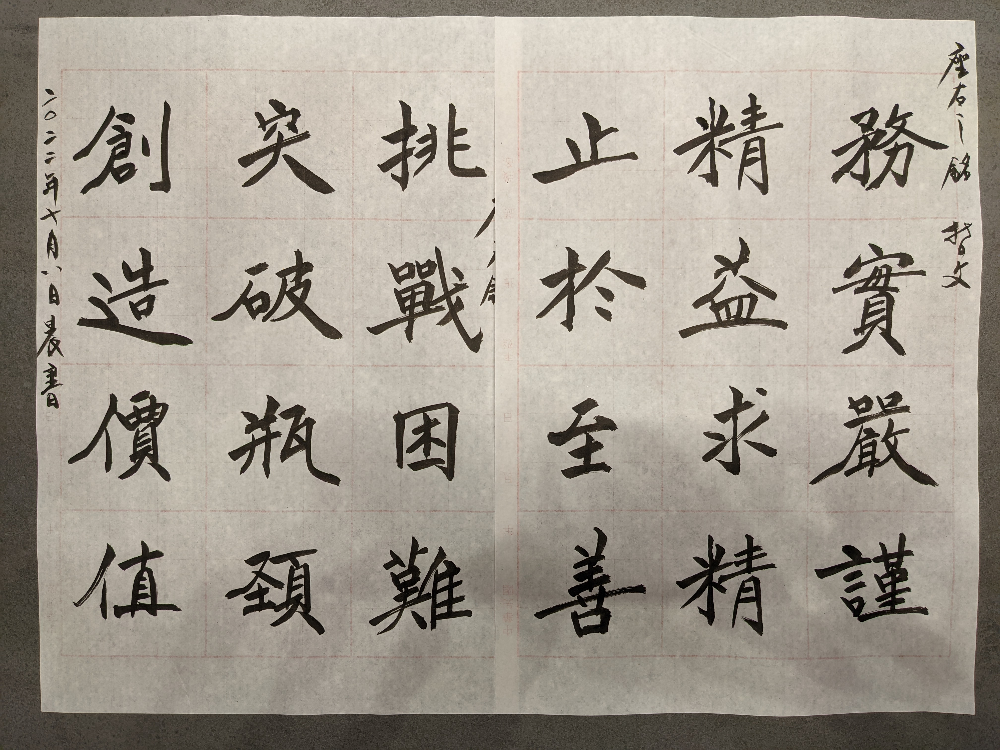

- 務實嚴謹,
我工作的態度就是不講空話，要動手做、親自嘗試，而且要徹底、各方面都要去考慮到，作到。 - 精益求精,
我練習吉他、寫毛筆字、或做任何一件事。不只是要做完還要做好，不只做好，還要作到最好，那怕別人說已經好棒了，我還總是能看到自己的缺點，還想要再改進。 - 止於至善。
這樣的追求只有到了「至善」-也就是「完美」的時候，才肯停止下來。(當然意思就是，幾乎是沒有停止的一天)
- 挑戰困難，
我每天醒來時，都會想著，今天最困難的事是那一件，越是困難我越想動手去做，絕不逃避，而不是拖到最後。 - 克服瓶頸，
特別是碰到左右不通，看起來毫無希望，不知怎麼辦的問題，更要想辦法嘗試去克服，因為我知道，一旦這個瓶頸被突破了。 - 創造價值。
我(們)的價值才會顯現。 證明了我有存在的價值。
2022/10月彰濱的新倉庫落成，12/17尾牙及參觀活動，我特地把這張字，放在辦公樓一樓的會議室。
